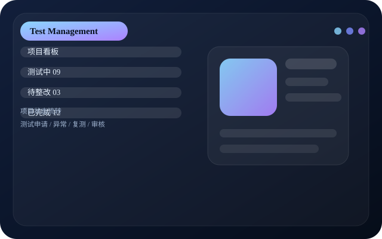
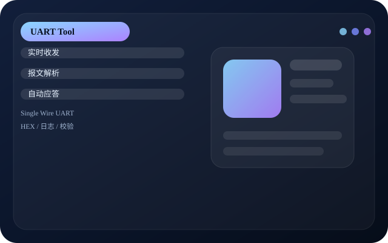

Portfolio / Project Cases
项目
项目页继续升级成更像作品集的形式：加入 mockup 截图、时间线、技术标签与价值说明，阅读体验更专业。

Portfolio-style showcase
参考你提供的网页结构，把项目展示改成更像正式案例页，而不是普通列表页。
E‑Bike 测试管理系统
让项目状态、异常、复测和审核可视化，减少遗漏，提高测试过程的透明度。
Step 01
问题定义
测试项目逐渐增多，状态更新分散在表格、聊天和个人记忆中。
Step 02
系统设计
建立申请、执行、异常、复测和审核流程。
Step 03
实际价值
降低遗漏，支持项目跟踪和多人协作。

单线 UART 充电器通讯工具
支持报文抓取、自动应答与模拟电池持续通讯，用于协议联调与问题定位。
Step 01
背景
部分充电器只有识别到通讯后才允许稳定输出。
Step 02
方案
提供收发、报文、模拟和日志联调能力。

测试报告自动生成工具
自动判定、图表输出和标准模板，降低重复排版与人工复制错误。
Step 01
背景
大量重复报告工作占用时间，且容易产生格式错误。
Step 02
价值
把时间从机械整理转向分析和结论输出。